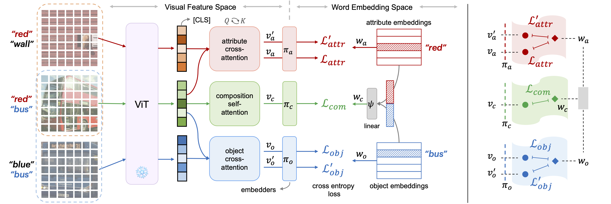
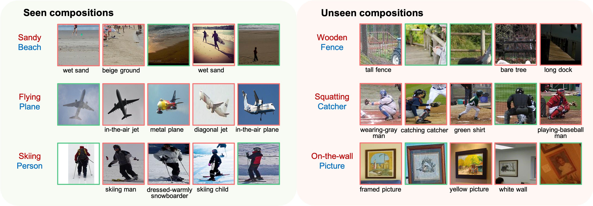
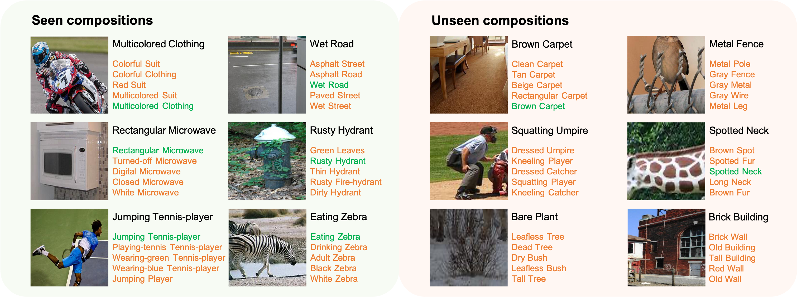

Learning Attention as Disentangler for Compositional Zero-shot Learning
The University of Hong Kong
CVPR 2023


Abstract
Compositional zero-shot learning (CZSL) is aimed at learning visual concepts (i.e., attributes and objects) from seen compositions and combining concept knowledge into unseen compositions.
The key to CZSL is learning the disentanglement of the attribute-object composition.
To this purpose, we propose to exploit cross-attentions as compositional disentanglers to learn disentangled concept embeddings.
For example, if we want to recognize an unseen composition "yellow flower", we can learn the attribute concept "yellow" and object concept "flower" from different yellow objects and different flowers respectively.
To further constrain the disentanglers to learn the concept of interest, we employ a regularization at the attention level. Specifically, we adapt the earth mover's distance (EMD) as a feature similarity metric in the cross-attention module.
Moreover, benefiting from concept disentanglement, we improve the inference process and tune the prediction score by combining multiple concept probabilities.
Comprehensive experiments on three CZSL benchmark datasets demonstrate that our method significantly outperforms previous works in both the closed- and open-world settings, establishing a new state-of-the-art.

Our Method
Qualitative Results
Text-to-Image Retrieval ( 💬 → 🌄 )

Image-to-Text Retrieval ( 🌄 → 💬 )

Citation
Learning Attention as Disentangler for Compositional Zero-shot Learning
Shaozhe Hao, Kai Han, Kwan-Yee K. Wong
CVPR 2023
@InProceedings{hao2023ade,
title={Learning Attention as Disentangler for Compositional Zero-shot Learning},
author={Hao, Shaozhe and Han, Kai and Wong, Kwan-Yee K.},
booktitle={CVPR},
year={2023}
}
Acknowledgements
This template was originally made by Phillip Isola and Richard Zhang for a colorful project, and inherits the modifications made by Jason Zhang. The code can be found here.